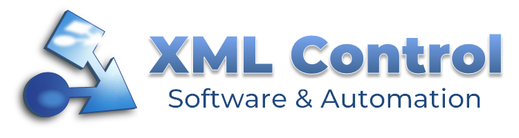
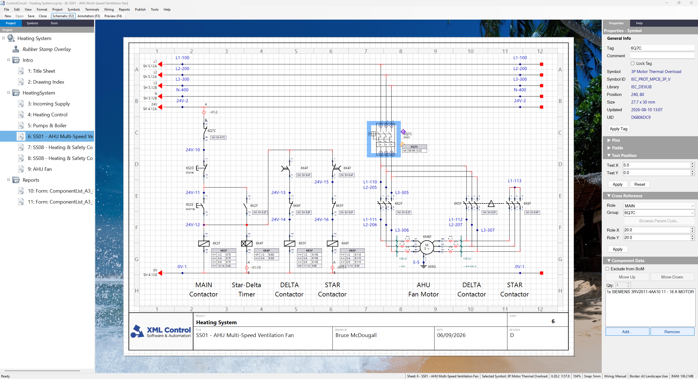

XML Control — Software & Automation

Supporting documentation and examples for XML Control apps and utilities.
Pages
- Control Circuit 2026 — An Electrical CAD tool for 2D drafting, component data summaries and control circuit schematic design on any scale.
Jam-packed with innovative features, like Web Portal (Workshop markup mode), Smart PDF, Live Presentation and more.

- SentinelSCADA — In development for 2027. A web-based SCADA platform. Design screens in your browser, bind them to Modbus TCP or AstroPLC tags, and run them on any device on your network. Security scales from simple XML through to Keycloak, with 21 CFR Part 11 readiness for regulated sites.
- SimpleVG — In development for 2027. To complement SentinelSCADA, a browser based Vector Graphics design tool with all the features you need for SCADA type graphics, and none of the complexity you don't.
Links